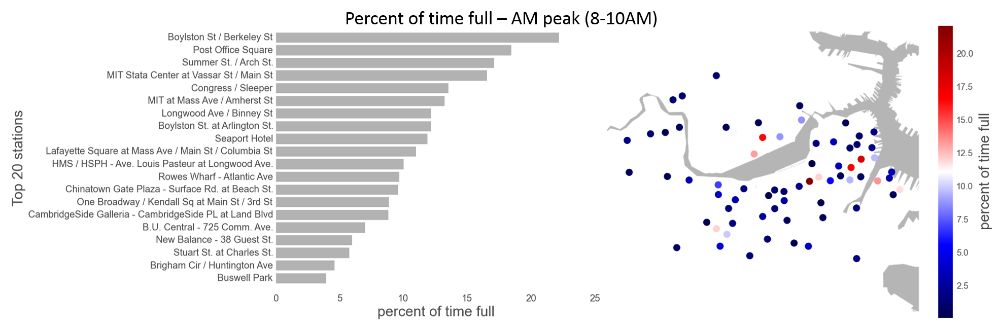
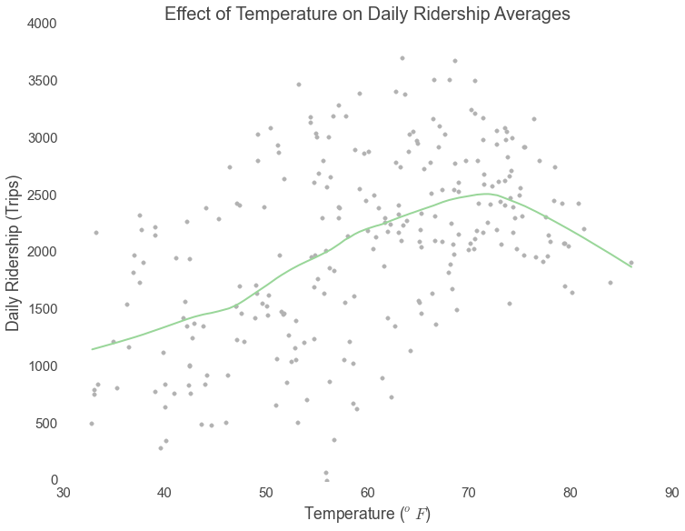

Project Overview
Motivation
A major challenge for bicycle sharing programs like Hubway is network imbalance. Some stations are chronically empty at certain times of the day, while others are often full, forcing riders to find another, more inconvenient station at which to drop off the bike. This element of uncertainty detracts from the otherwise seamless user experience. To partially remedy this problem, Hubway uses vans to redistribute the bikes across stations each day. However, this strategy is ad hoc and haphazard. It adds to company costs and moreover detracts from the environmental benefits that Hubway offers. This problem calls for a more scientific approach to both the redistribution of bikes across stations and the provision of information to customers. We propose a new data science program that informs customers of the likelihood that either a bicycle or an empty bike dock will be available at a given station at some future point in time.
Objectives
Through this project, we sought to answer four primary questions:
- How do environmental variables affect the future state of Hubway stations?
- What do usage patterns look like with respect to specific stations and how that translates to imbalances in the system?
- Can we integrate these explanatory variables and these usage patterns into a predictive algorithm that would predict empty and full stations in the near future?
- What form should that algorithm take?
Approach
We began our study by scraping relevant datasets from the Hubway website as well as websites detailing weather and sports event histories for Boston during 2012. We then performed a series of exploratory analyses with the hope of understanding how different variables were associated with one another. These explorations revealed important patterns about Hubway ridership on weekdays vs. weekends, in good weather vs. bad weather, and before and after baseball games. We also incorporated mapping and clustering operations into our exploratory phase: we used simple techniques to identify how location affects station ridership and more complicated techniques such as singular value decomposition to group stations according to temporal use patterns and map them geographically. The information collected during the exploration phase informed the creation of three predictive algorithms: one using random forest classification, another using Bayesian inference, and third using multiple regression.
Analysis
The Hubway system serves casual users as well as riders who pay a membership fee to utilize the bicycles more regularly. The company collects demographics data on its members. During 2012, about two thirds of Hubway riders were members, and of those about three fourths were males.
Hubway is intended for short rides, and overtime fees apply to trips longer than thirty minutes. Our analysis of Hubway’s trip data shows that over 90 percent of trips have a duration of less than 30 minutes.
Hubway serves both commuters and casual riders. By mapping trip routes for weekdays and weekends, we see that certain routes are heavily used on weekdays for commuting. On weekends, when casual riders and tourists constitute Hubway’s main user base, trips are more distributed across the system.
Hubway users almost always ride in a single direction, picking up and dropping off their bikes at different stations. A user might retrieve a bike at Central Square and return it at Harvard Square. This behavior leads to imbalances in the system: popular origin stations run out of bikes and popular destination stations fill up with bikes, running out of return docks. The resulting disparities cause shortages for riders and represent the motivation for our study. The bar charts and maps below identify the stations most often empty or full during the weekday morning and evening rush hours.
We used a combingation of singular value decomposition and k-means to identify groups of stations with similar usage patterns. For each station, we compute the average value of fullness for every 5-minute interval on weekdays and use this result as a feature vector for the clustering process. A fullness of 1 during a given interval indicates that a station tends to be totally full during that interval on an average weekday. In the heatmap below, each line represents the fullness profile of a single station over the course of a weekday and stations are grouped according to cluster membership. The heat map and geographic map below illustrate the results of our clustering effort and clearly differentiate between stations primarily serving commuters (clusters 1 and 2) and stations used for mutiple purposes (clusters 3 and 4). Stations in cluster 1 tend to be located in residential areas, explaining why they are mostly full in the morning and evening and empty during the working day. In contrast, stations in cluster 2 tend to be full mosty during midday and empty in the morning and evening. Stations in clusters 3 and 4 tend to line in the periphery of zones covered by clusters 1 and 2.
It’s no fun riding a bike in the rain. These plots show how rain puts a damper in Hubway ridership. The effect is more pronounced on weekends, when Hubway users tend to be casual riders who can simply save the trip for another day or take a taxi.
Riding a bike in warm weather is great. Unless it’s too warm. This plot, along with the accompanying LOESS regression (green line) depicts ridership as a function of temperature. Ridership peaks when temperatures hit the low 70s (fahrenheit) but then drops when temperatures become uncomfortably hot.
This plot shows how the number of Hubway trips leaving the stations near Fenway spikes on nights with Red Sox games. Go Sox!
Prediction
Right now, Hubway users can’t really predict whether a station will be empty or full in thirty minutes. The best they can do is check to see whether a station is currently empty or full and then assume that it will look the same in the near future. We set out to change that by constructing truly predictive models. To assess the accuracy of our models, we had to first construct a “baseline” to compare our results against. The first chart below shows the prediction accuracy of the baseline model. This model simulates the best possible results possible using real time data.
Our predictive models take weather and events into account and use more advanced data science techniques such as bayesian inference, random forest classification, and regression analysis. The plots below shows the results of our predictive models compared against the baseline model. Accuracy here is gauged in terms of “recall,” which asks, “Of all the stations that ended up being empty or full, how many did the model identify correctly?"